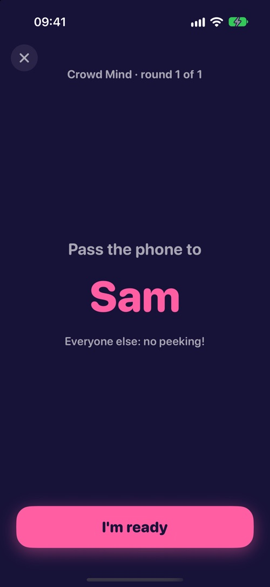

Three ways to play
One phone or everyone's.
- 1Solo: beat your own best score, any time.
- 2Pass the phone: one iPhone, taking turns. Up to 4 players free, up to 8 with the Party Pack.
- 3Online room: everyone joins with a 4-letter code or an invite link and plays at once. Up to 4 free, up to 12 with the Party Pack.
Every phone builds exactly the same round from a shared seed, so nobody gets an easier question.

87 mini games
Quick to learn. Hard to master.
Reflex duels, colour traps, optical illusions, estimates, a world map, billiards and tower physics, memory tests, rhythm and sound games, little detective cases, and games that use the phone itself: tilt it, blow into it, count the buzzes. Each round takes seconds.
Group games
Read the room.
Some games are scored against the whole table: pick what most people pick, find the lowest number nobody else chose, or land on the group's wavelength.
Daily challenge
Five games. Same for everyone. Every day.
A new five-game challenge every day, one try each. Build a streak and compare your score on the Game Center leaderboard.
Fair by design.
Timing is measured on your own phone, so a slow connection never costs you points. No ads in the middle of a party, no tracking, no account needed.
Support
Found a bug, have an idea for a game or a question? Write to us at hyapps@outlook.com.
How many players can play?
Solo, or up to 4 players for free, passing one phone or in an online room. With the Party Pack: up to 8 on one phone and up to 12 in an online room. Group games (Crowd Mind, Lowest Unique, Two Thirds, Same Wavelength) need at least 3 players.
Is it free?
Solo play is free with all 87 games, and so are the daily challenge and statistics. With friends, 25 games are free each week (12 favourites plus 13 that change every Monday), for up to 4 players and as many matches as you like. No ads, no subscription. The Party Pack is a one-time purchase that opens all 87 games to groups, up to 8 players on one phone and 12 in an online room. In a room the host's pack is enough. Family Sharing is on.
Does everyone need the app?
For pass-the-phone, only one phone needs it. For an online room, everyone plays on their own phone, so everyone needs Quick Wits.
Do I need an internet connection?
Solo, pass-the-phone and the daily challenge work offline, except Map Pin, which needs the internet to load the map. Online rooms need a connection.
What if my phone drops out of an online room?
Open the app and join with the same code: you get your seat back and continue from the current round. The host can also choose not to wait.
When does the daily challenge change?
Every day at 07:00 UTC, the same moment everywhere, so everyone plays the same five games and rounds and shares one leaderboard.
More from HY Apps